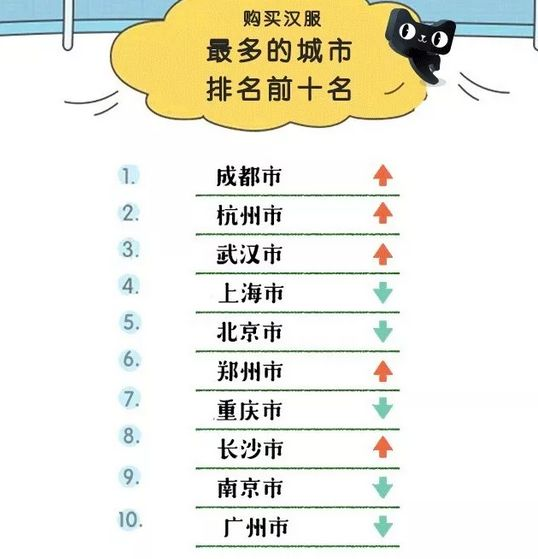
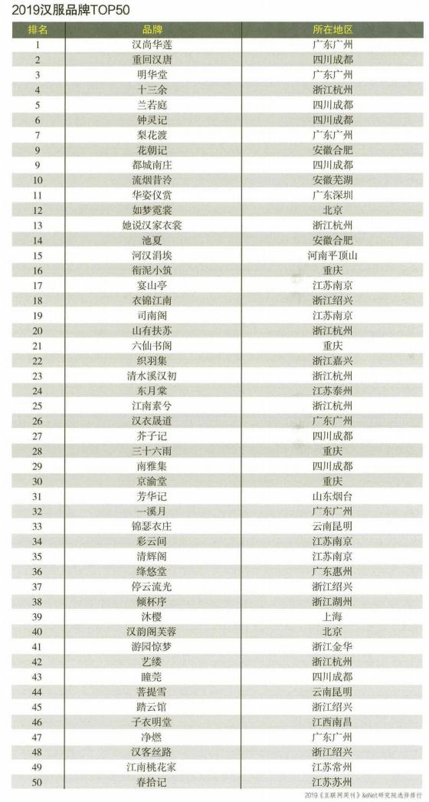
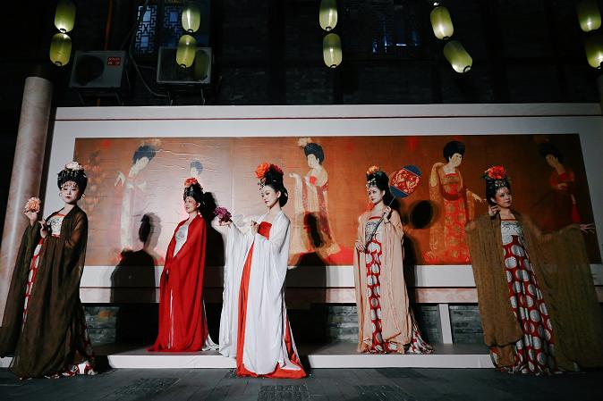
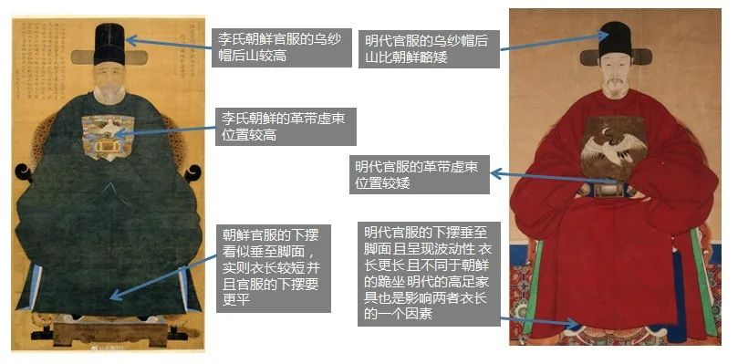
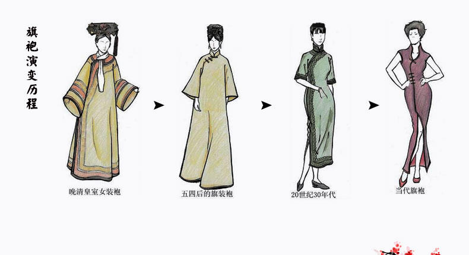
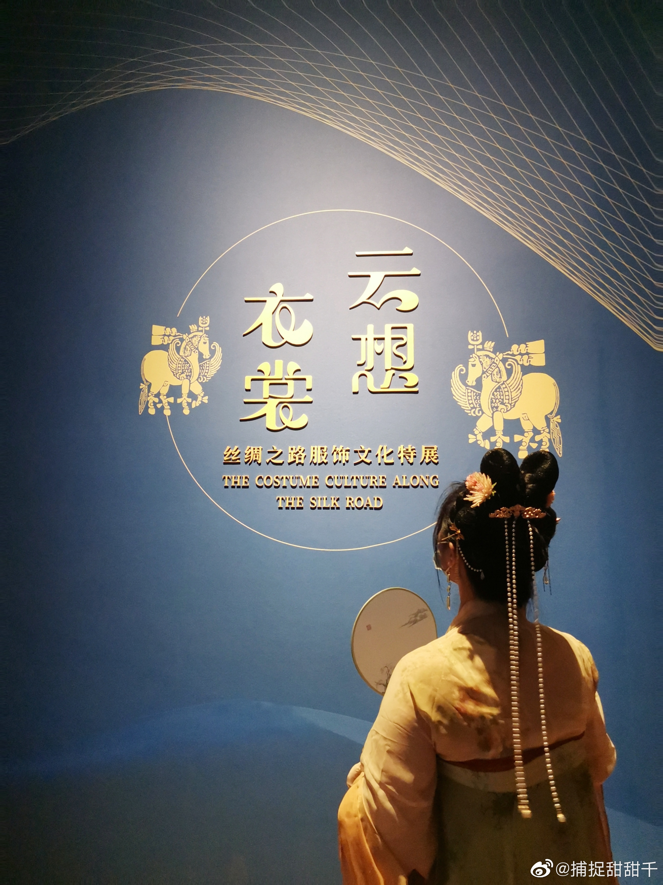
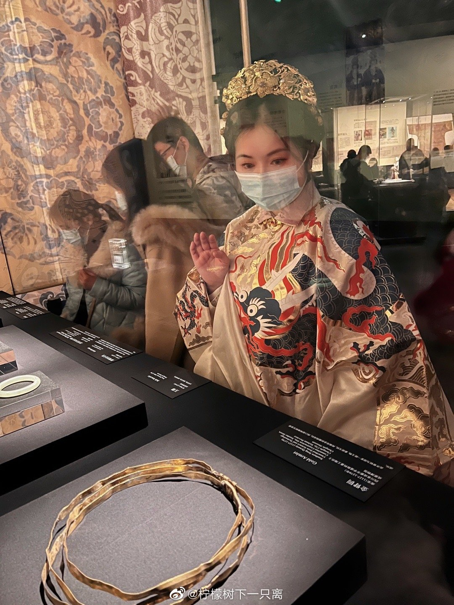

始作于 2020 年汉服出行日前夕之闪电演讲
汉服复兴 —— 近年的现象级文化
成都 —— 汉服之都
2019 年：
- 汉服商家数量第一
- 汉服产品销量第一
- 汉服产业产值第一



曾经的汉服“殇城”
（国际互联网视频，需科学上网）
烧汉服事件始末
民族服装连连看
汉代曲裾 vs 日本和服
唐代齐胸 vs 朝鲜女装
明代官服 vs 朝鲜男装
汉服小姐姐英语回怼无脑黑（上）
（国际互联网视频，需科学上网）
汉服小姐姐英语回怼无脑黑（中）
（国际互联网视频，需科学上网）
汉服小姐姐英语回怼无脑黑（下）
（国际互联网视频，需科学上网）
清代服装：旗袍、马褂
剃发易服
留头不留发，留发不留头
汉服之定义
汉民族发展过程中自然演变出的传统服装
汉服复兴运动
正装·日常
2003 年 11 月 22 日（明亡后 359 年）
汉服首次回归日常，并见诸报端
装束·复原
自知·正名

Dior 抄袭马面裙

1981 年英国王妃戴安娜在订婚宴上穿了马面裙

英文报道清晰说明了它是“Red silk satin Chinese embroidered skirt with chrysanthemum motif”（菊花图案红色丝缎中式绣裙）
铭记历史，轻装上阵
汉服，穿，就完了~
汉服，美，就完了~
博物馆奇妙日


岂曰无衣，与子同袍
汉服复兴是一场完全由华人青年自发掀起的社会运动，
愉快、阳光又热血。
青年人在日常做一些有趣、有意义的小事，
就能营造自己生活的小确幸，
和民族、社会的大复兴~

开源市集